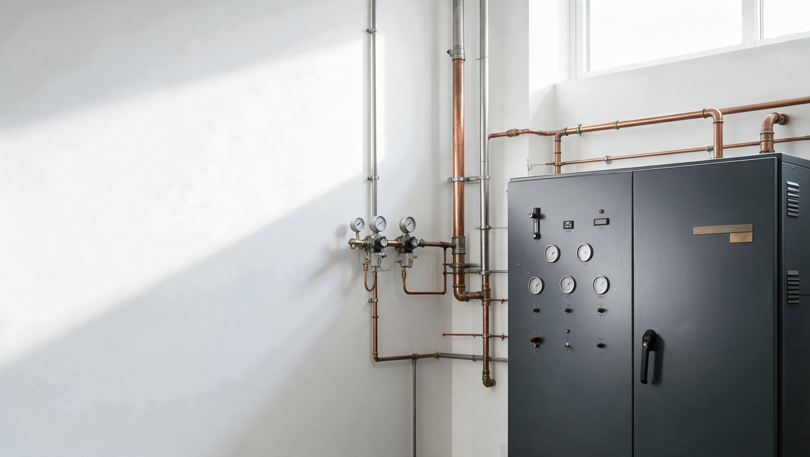

On-site medical oxygen for hospitals and care providers
Ready for an oxygen supply source that lives inside your hospital?
Meridian Oxygen installs an oxygen concentrator supply system that produces medical oxygen from room air, inside your building and your hospital infrastructure, and runs beside the supply you already have. You gain a second source that no delivery schedule controls. On-site oxygen generation, specified as part of a hospital oxygen system.
- Oxygen 93 produced on site, purity monitored and alarmed around the clock
- Sold as a running system on a service contract, never as a box that waits
- Built on a platform that has generated medical oxygen since 2013

For the value analysis committee
What does a purchasing agent get before the first meeting?
A packet, not a pitch. The specification sheet, the purity monitoring and alarm schedule, the redundancy configuration, the service contract terms, and a plain statement of what this system is and is not cleared to do. You hand it to the committee. The committee asks fewer questions.
What it is
One machine, three jobs your facility already pays for
Oxygen production, oxygen storage and purity monitoring, in one cabinet, connected to your medical gas pipeline.


The evidence, not the brochure
Four numbers your committee can check
Every figure below comes from a public primary source. We cite it because your committee will.
Where it belongs
A second source, beside the one you have
Your bulk tank and your cylinder header stay where they are. Meridian Oxygen adds an oxygen production source that your pipeline can draw on when the truck is late, when the vaporizer ices, or when oxygen demand in the intensive care unit climbs past the plan and critical care equipment across your critical care units draws harder than it did yesterday. The system is designed and specified as a supply source alongside existing supply, which is the configuration the code and the clearance for this equipment class describe.
You keep control of your emergency oxygen supply. You gain a source that lives on your electrical system, under your roof, inside your hospital infrastructure.
Explore
What we will not tell you
Three things this system is not
It is not a replacement for a properly designed bulk liquid supply. It is not a portable oxygen generator for a single bedside. It is not a device we describe as cleared for any use until that clearance is confirmed in writing. Your value analysis packet says exactly what the equipment is, what it produces, and how it is monitored. That honesty is the point.
Oxygen 93 carries a hard ceiling for high-purity blenders and for low-flow anaesthesia circuits. We disclose both limits before you ask, because a competitor will raise them in the room if we do not.
Read the buying questions